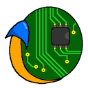
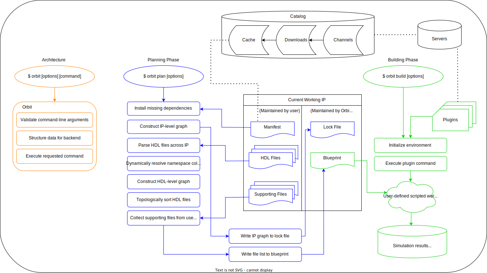
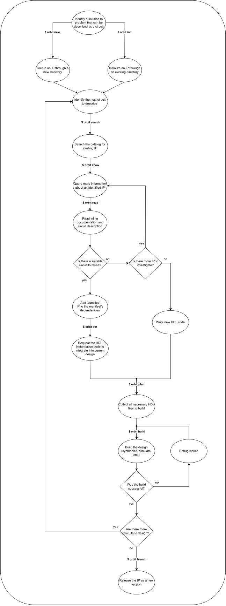

The Book of Orbit

Orbit is the package manager for Hardware Description Languages (HDL). Orbit provides a complete frontend package management solution to HDL projects, while allowing users to implement custom backend workflows through a plugin system. Orbit provides commands for every stage of the development cycle, in areas such as exploration, integration, and automation.
Sections
The following documentation will be mainly divided into 4 sections:
- Tutorials - step-by-step lessons working with orbit
- User Guide - general procedures for "how-to" solve common problems
- Topic Guide - explanations that clarify and provide more detail to particular topics
- Reference - technical information
About the Project
The project is open-source under the GPL-3.0 license and is available on GitHub.
About the Documentation
Documentation system and methodology is inspired by Divio.
Getting Started
This section walks you the basic steps to get Orbit up and running on your local machine.
Note: Throughout this documentation, there may be commands provided to you to run in a terminal. These commands are denoted with a
$prefix, which should be excluded when copying the command.
Seeking Help
Orbit is a package manager and development tool. With learning new tools there is always a learning curve. Orbit tries to make it less intimidating to use by offering help and information in a variety of ways.
To see a list of common commands and options, just use orbit with no arguments.
To view quick summaries on commands, use -h, --help flags.
To view more detailed manual pages and information, use orbit help.
Complete documentation can be found on this current website.
Installing
There are two main methods for getting orbit running on your system: downloading a precompiled binary or using cargo.
Reminder: By installing and using Orbit, you accept usage under its GPL-3.0 license.
1. Using a precompiled binary
- Visit Orbit's releases page on Github to find all official releases.
- Download the binary for your architecture and operating system.
- Install Orbit. Either run the provided
installexecutable or follow the manual instructions for placing the Orbit executable (orbitfor unix andorbit.exefor windows) in a location recognized by the PATH environment variable.
There are multiple solutions to accomplish step 3. The following outlines one way to manually install orbit depending on the user's operating system.
Unix
- Open a terminal to where Orbit was downloaded.
- Unzip the prebuilt package.
$ unzip orbit-0.9.7-x86_64-macos.zip
- Move the executable to a location already set in the PATH environment variable.
$ mv ./orbit-0.9.7-x86_64-macos/bin/orbit /usr/local/bin/orbit
Windows
-
Open a terminal (Powershell) to where Orbit was downloaded.
-
Unzip the prebuilt package.
$ expand-archive "./orbit-0.9.7-x86_64-windows.zip"
- Make a new directory to store this package.
$ new-item -path "$env:LOCALAPPDATA/Programs/orbit" -itemtype directory
- Move the package to the new directory.
$ copy-item "./orbit-0.9.7-x86_64-windows/*" -destination "$env:LOCALAPPDATA/Programs/orbit" -recurse
- Edit the user-level PATH environment variable in Control Panel by adding %LOCALAPPDATA%\Programs\orbit\bin.
2. Installing with Cargo
To install the latest version through Cargo:
$ cargo install --git https://github.com/c-rus/orbit.git --tag 0.9.7
This will build the orbit binary and place it a path already set in the PATH environment variable.
Checking if Orbit is installed correctly
To verify orbit is working correctly on your system, open a new terminal and run:
$ orbit --version
orbit 0.9.7
This should print out your version of orbit you installed. Congratulations!
Upgrading
Once Orbit is installed, it can be self-upgraded to the latest official version released found on its Github.
$ orbit --upgrade
This behavior performs the following strategy:
-
Removes any executable in the executable's directory starting with
orbit-(these are considered stale binaries, such asorbit-0.1.0). -
Connects to https://github.com/c-rus/orbit/releases to find the most recent released version.
-
Checks if the most recent version online is ahead of the currently installed version.
Note: If the version online is newer, a prompt will appear to confirm you wish to install the new version. This prompt can be bypassed by adding the
--forceflag to the above command.
-
Downloads the checksum file to a temporary directory to see if there is a prebuilt package available for the current architecture and operating system.
-
Downloads the package to a temporary directory and computes the checksum to verify the contents.
-
Renames the current executable by appending its version to the name (marking it as a stale binary, such as
orbit-0.1.1). -
Unzips the package and moves the new executable to the original executable's location.
Note: If you wish to remove the newly created stale binary after an upgrade, rerunning
orbit --upgradeimmediately again will perform step 1 and stop at step 3.
Tutorials
The following tutorials aim to provide step-by-step instructions through examples of basic ways for interacting with orbit.
Before starting the tutorials, it is assumed you possess basic knowledge of the following topics:
- sending commands through the command-line
- digital logic concepts
- navigating your machine's local filesystem
Note: The HDL code used for this section may be very didactic in nature and is not intended to reflect production-level code or any particular coding style.
First Project: Gates
In this tutorial, you will learn how to:
- Create an IP from scratch
- Leverage
orbitto integrate an entity into a larger design - Build a design using a simple plugin
- Release a version of an IP
First Dependency
Gates: Revisited
Final Project: Adder
User Guide
Develop IP
Use IP
Share IP
Make Channels
Create Plugins
A plugin is a command to execute a custom workflow during development.
Plugins are defined in the config.toml file.
Let's walk through an example plugin.
Example: xsim
To utilize backend tools for HDL development, users can set up plugins to be used across projects. A plugin is called by its alias. The command is the first argument called in the process following with all the arguments in args, and then any additionally set arguments set on the command-line.
xsim plugin configuration in config.toml
[[plugin]]
alias = "xsim"
command = "python"
args = ["plug/orbit-xsim.py"]
summary = "basic toolflow for xsim executable"
fileset.xsim-tcl = "*_xsim.tcl"
fileset.xsim-wcfg = "*.wcfg"
# ...
What is actually ran underneath Orbit when calling "xsim" during build:
$ python plug/orbit-xsim.py
Note the filepath is relative to the config.toml file's location, if an argument is a relative path, Orbit will resolve it before running the command.
Filesets can be defined to help prepare what files you will need during the build. The planning phase will collect files that glob-style match the given patterns and place them in the blueprint.tsv file for building.
Topic Guide
Conceptual Overview
Orbit is a frontend package manager for HDL development that supports any backend tooling and workflow.

Key points
-
Every IP requires a manifest file (
Orbit.toml). This is maintained by the developer. The manifest file documents basic metadata and the project's list of direct dependencies. -
Backend tools and workflows (makefiles, TCL scripts, etc.) are able to be decoupled from IP and can be reused across projects by defining plugins in the configuration file (
config.toml). -
Orbit does not require a version control system (VCS). Orbit is intended to work with any VCS (git, mercurial, svn, etc.).
-
Orbit solves the namespace collision problem by a form of name mangling when primary design unit identifiers conflict in the dependency tree (dynamic symbol transformation).
-
Download an IP to store a compressed snapshot of a particular version to install later. Downloads are placed in a hidden directory abstracted away from the user and maintained by Orbit.
-
Install an IP to the cache to reuse it in another project (
orbit install). The cache is a hidden directory abstracted away from the user and maintained by Orbit. -
Orbit generates a lock file (
Orbit.lock) during the planning phase (orbit plan) after resolving the dependency tree to store all the data required to reproduce the build. The lock file is maintained by Orbit and must be checked into version control. -
Orbit generates a blueprint file (
blueprint.tsv) during the planning phase which lists the in-order HDL files required to build the design. The blueprint may also list other user-defined filesets. The blueprint file is maintained by Orbit. It changes frequently and is placed in the build directory, so it should not be checked into version control. -
In general, plugins will read the blueprint file to analyze the source files and then perform some action using a particular backend tool.
-
It is required to plan a design (
orbit plan) before building a design (orbit build). -
Launching a new version (
orbit launch) performs a series of checks to make sure the version will work with Orbit when being referenced in other projects.
IP
Orbit.lock
Orbit.lock is a special file automatically created and updated by Orbit. It is not intended to be manually edited. Orbit writes this file every time orbit plan is called. The purpose of the lock file is store the necessary information to reproduce the build. Ideally, if a project has a lock file, then the project can be rebuilt on any machine and reproduce identical results on all machines.
Orbit uses the lock file when it determines the current ip's Orbit.toml manifest data matches with the lock file entry written for the current ip. When this comparison is true it signals that there has been no change to the state of the system. Any change to Orbit.toml may result in an updated Orbit.lock file.
It is recommended to check in the lock file to version control to ensure the project can be rebuilt on other machines when the repository is cloned.
Note: An IP will only read its own lock file and not the lock file of any of its dependencies when needing data to reproduce a build.
Blueprint
Orbit acts a front-end package manager. With Orbit alone, it can move and organize projects and files. HDL development can consist of complex workflows and tools to perform a variety of tasks such as synthesis, verification, and hardware-in-the-loop testing.
With this in mind, Orbit is designed to be a frontend to all backends. It achieves this through a special output file called blueprint.tsv. The blueprint can be considered the link between Orbit's package management to any backend tool/build system.
The blueprint is placed in the current working IP's build directory.
Specification
The blueprint is broken into a series of rules on every line.
RULE
RULE
RULE
...
A rule defines the fileset, identifier, and filepath needed to build the current design.
RULE ::= <FILESET><TAB><IDENTIFIER><TAB><FILEPATH>
Note: A literal tab character
\tis used as <TAB>.
The fileset is the name for a group of files to be commonly collected.
The identifier can be one of two values depending on the fileset context.
The filepath is the absolute path to the file found for the given fileset.
example blueprint.tsv for a comparator IP:
XSIM-WCFG comparator_tb C:/users/kepler/develop/hdl/comparator/sim/wf/comparator_tb.wcfg
PY-MODEL comparator_tb C:/users/kepler/develop/hdl/comparator/sim/model/comparator_tb.py
VHDL-RTL work C:/users/kepler/develop/hdl/comparator/rtl/constants_pkg.vhd
VHDL-RTL rary C:/Users/kepler/.orbit/cache/gates-0.1.0-aac9110085/rtl/and_gate.vhd
VHDL-RTL work C:/users/kepler/develop/hdl/comparator/rtl/comparator.vhd
VHDL-SIM work C:/users/kepler/develop/hdl/comparator/sim/comparator_tb.vhd
Filesets
A fileset's name is normalized to ALL-UPPERCASE-WITH-HYPHENS-NOT-UNDERSCORES. This makes it consistent across plugins when reading the blueprint.tsv.
| Fileset | Normalized Fileset |
|---|---|
| py_model | PY-MODEL |
| do-file | DO-FILE |
Built-in Filesets
Built-in filesets are called HDL filesets. These currently include:
- VHDL-RTL
- VHDL-SIM
A file grouped under VHDL-SIM has an entity declaration with zero ports declared. All other VHDL files ending in .vhd or .vhdl are considered VHDL-RTL.
The rules for HDL filesets are in-order, meaning the entire design hierarchy tree was generated by Orbit to determine the topological sorting of the required files.
Note: VLOG-RTL and VLOG-SIM are planned to be implemented in the future. Their behavior is similiar to VHDL-RTL and VHDL-SIM, but for Verilog files.
Identifiers
HDL filesets
If the fileset is an HDL fileset, then the identifier is the HDL library for the particular file. All files belonging to the current working IP will automatically be identified under
the library work.
Supportive filesets
If the fileset is user-defined (not an HDL fileset), then the identifier is the file's name.
Filepaths
The filepath is the absolute path to the file collected under the given fileset. The filepath can be used in a plugin for further processing.
Protocols
A protocol is a series of steps to take to get a package from the internet. Protocols exist because there are numerous ways to access data from the internet depending on your development team and environment. Orbit tries to be as modular and flexible as possible with protocols. They are required during the download step in acquiring a package for future reference within the cache.
Default Protocol
Orbit has a default protocol that relies on the Rust curl crate to make HTTP requests. This protocol assumes the URLs inputted into it point to a zip archive containing the targeted package. The protocol will extract the zip file, and then place the contents in the queue, which is a special directory marked by Orbit as its "waiting room" for packages to be later installed to the cache.
Custom Protocols
A user can define a custom protocol for accessing packages from the internet by modifying config.toml.
config.toml
[[protocol]]
name = "git-op"
summary = "Accesses packages through git to handle remote repositories."
command = "git"
args = ["clone", "-b", "{{ orbit.ip.version }}", "{{ orbit.ip.source.url }}", "{{ orbit.queue }}/{{ orbit.ip.name }}"]
The example above demonstrates one way to use the git command-line tool to clone packages from the internet through remote repositories. More complex protocols may require using a scripting language such as Python to program the necessary steps.
How to use the default protocol for a package
Modify the current project's Orbit.toml file to only specify the URL as the source. The default protocol assumes the URL points to a publicly accessible zip archive.
Orbit.toml
[ip]
name = "orbit"
version = "0.9.3"
source = "https://github.com/c-rus/orbit/archive/refs/tags/0.9.3.zip"
# ...
How to set a custom protocol for a package
Modify the current project's Orbit.toml file to specify the URL as well as the protocol required. It is each user of the package's responsibility to ensure the necessary protocol(s) are properly configured in their settings.
Orbit.toml
[ip]
name = "orbit"
version = "0.9.3"
source = { url = "https://github.com/c-rus/orbit.git", protocol = "git-op" }
# ...
Dynamic Symbol Transformation
Note: This is an advanced topic and is not necessary to understand in order to use Orbit.
This technique is related to name mangling in programming languages. Name mangling is a technique used to solve problems regarding the need to resolve unique names for programming entities. You can learn more about name mangling here.
Problem Statement
Before we begin, it is important to understand the problem we are trying to solve. An issue inherent to VHDL and many other languages is namespace pollution, which is when many programming language variables/identifiers/units/classes are defined at the global level. To learn more about namespace pollution, here is a StackOverflow post that explains it in relation to Javascript.
Namespace pollution can lead to namespace clashes. As you define more primary design units at the same scope, you are more likely to have two things that accidently have the same name. This is at the core the problem we are going to solve, because VHDL compilers and synthesizers are not built to gracefully handle clashes and will error out when a primary design unit at the same scope has multiple definitions.
In VHDL, a common example of a namespace clash is when different files define an entity by the same name, which may have different behaviors. Namespace clashes may start to appear when a higher-level IP requires the same entity from an IP but as different versions throughout its dependency tree.
Solution - Dynamic Symbol Transformation
The proposed algorithm solves the namespace clashing problem by rewriting conflicts with a new unique identifier without losing information in the original identifier.
Limitations
Orbit automatically handles resolving duplicate identifiers for primary design units due to two design contraints. The limitations are:
- All primary design unit identifiers in the current IP must be unique within the scope of the IP.
- All primary design units identifiers in the current IP must be unique within the scope of the IP's direct dependencies. An identifier can be duplicated for primary design units across indirect dependencies.
Example Demonstration
This section walks through a basic demonstration of the dynamic symbol transformation (DST) algorithm. First, it defines some terminology, and then walks through the algorithm's functionality.
Symbols
Within the context of VHDL, let's consider a symbol to be the identifier of a primary design unit. A primary design unit is a VHDL construct that exists at the global namespace. There are four primary design units:
- entity
- package
- configuration
- context
Note: VHDL does support the concept of libraries, which can add 1 level of nested scope to a primary design unit, but for this example we will assume the primary design units are defined within the same library/scope.
In the following code, the symbol and_gate corresponds to an entity.
entity and_gate is
port (
a : in bit;
b : in bit;
c : out bit
);
end entity;
file: /lab1/and_gate.vhd
Remember that this identifier could appear again at the same namespace level as this exsiting entity in a different VHDL file.
Now, imagine you are integrating VHDL code from various existing IPs. As you instantiate entities within larger entities, you realize there exists another entity named and_gate further down in the hierarchy, but this one has a different behavior than the previously defined and_gate circuit from the /lab1 directory.
entity and_gate is
port (
a : in bit_vector(3 downto 0);
b : in bit_vector(3 downto 0);
c : out bit_vector(3 downto 0)
);
end entity;
file: /lab3/and_gate.vhd
Since the current IP requires both code segments, then traditionally your EDA tool would complain to you and be unable to resolve which and_gate to be used where. It then falls on the developer to rename one of the entities where it is defined and everywhere it is referenced, which introduces additional overhead in time and possibilities for errors. This problem is solved with DST.
Walkthrough
Take this example dependency tree at the IP level:
final-project
├─ lab3
│ └─ lab2
| └─ lab1
└─ lab2
Imagine the final-project IP has an entity called top_level which is the root of circuit hierarchy. From there, it reuses entities from the other IP.
Let's look at the VHDL entity hierarchy tree across the integrated IP:
top_level [final-project]
├─ and_gate [lab3]
│ └─ adder [lab2]
| └─ and_gate [lab1]
└─ mux [lab2]
Notice lab1 and lab3 both have the and_gate entity, but their interfaces and functionality are internally different as previously mentioned. How can we allow both units in the hierarchy while resolving the namespace clash?
DST identifies namespace clashes within the current dependency graph and automatically resolve the conflicts to produce a clean unambiguous graph.
top_level [final-project]
├─ and_gate [lab3]
│ └─ adder [lab2]*
| └─ and_gate_fbe4720d0 [lab1]*
└─ mux [lab2]
Let's take a closer look at what happened here. DST handled the namespace clash by transforming, or renaming, the entity related to lab1. The entity's identifier in lab1 was appended with the first 10 digits of the original lab1 IP's checksum. This transformation occurred at that IP's source code level (lab1), and in the source code for all dependents of that entity (lab2). Therefore, DST produced new dynamic variants of the lab1 and lab2 IPs that properly reference and associate with and_gate_fbe4720d0.
DST specifically chose not to rename the and_gate from lab3, or else the user would have to be burdened with trying to track and maintain the new unique identifier in the currently developed IP (final-project). As a result, DST has no additional overhead to the user and is kept abstracted away by Orbit. Direct dependencies are never chosen for DST.
Emphasis
Dynamic symbol transformation lets Orbit avoid a major issue in package management: dependency hell. As projects and their dependencies become more complex, Orbit can continue to allow the user to integrate different verisons of the same package throughout the overall design. Conflicts in incompatible versions are avoided within the dependency graph. You can learn more about dependency hell here.
Further Reading
- https://stephencoakley.com/2019/04/24/how-rust-solved-dependency-hell
.orbitignore
Sometimes copies of files will exist within a given project. In this case, you may have duplicate primary design unit identifiers. Having duplicate primary design unit identifiers within the same project results in an error because Orbit cannot resolve ambiguity in which unit to select (as backend tools cannot either).
Note:
.orbitignorefiles must exactly match its case-sensitive spelling for Orbit to detect it.
Syntax
.orbitignore files follow the same syntax as .gitignore files. See the pattern format for more information: .gitignore pattern format.
Resolving errors
An error may look like the following:
error: duplicate primary design units identified as 'my_entity'
location 1: rtl/my_entity_file1.vhd:20:1
location 2: rtl/my_entity_file2.vhd:1:1
hint: To resolve this error either
1) rename one of the units to a unique identifier
2) add one of the file paths to a .orbitignore file
A .orbitignore file can be used to tell Orbit to ignore reading that file during HDL analysis. When creating a .orbitignore file, it should generally be placed alongside the Orbit.toml file.
After reviewing each unit, we decide they are identical and one can be safely ignored for now. We create a file called .orbitignore at the root of our current project.
.orbitignore:
rtl/my_entity_file2.vhd
Running commands in Orbit no longer results in an error and Orbit chooses to read the 'my_entity' design unit from rtl/my_entity_file1.vhd.
Note: If using a
.orbitignorefile, it is recommended to check in to version control.
Reference
Manifest
The Orbit.toml file for each IP is called its manifest. It is written in the TOML format. It is maintained by the developer and contains metadata that is needed to build the IP.
Note: The manifest's file name is "Orbit.toml", with respect to case-sensitivity.
Every manifest file consists of the following sections:
- [ip] - Defines an IP.
- name - The name of the IP.
- version - The version of the IP.
- authors - The authors of the IP.
- library - The HDL library for the design units within the IP.
- summary - A short description of the IP.
- keywords - A list of simple words categorizing the IP.
- source - The URL for remotely retrieving the IP.
- readme - The path to the README file.
- [metadata] - An unchecked section for custom fields.
- [dependencies] - IP dependencies.
- [dev-dependencies] - IP dependencies only used for ongoing development.
The [ip] section
The first section in a Orbit.toml file is [ip].
[ip]
name = "my-ip" # the name of the package
version = "0.1.0" # the current version
The only fields required by orbit are name and version.
The name field
[ip]
name = "my-ip"
# ...
The version field
[ip]
# ...
version = "0.1.0"
The authors field
[ip]
# ...
authors = ["Duncan Idaho", "Gurney Halleck"]
The library field
[ip]
# ...
library = "my-lib"
The summary field
[ip]
# ...
summary = "A short description of the ip"
The keywords field
[ip]
# ...
keywords = ["cpu", "risc"]
The source field
[ip]
# ...
source = "https://github.com/c-rus/orbit/archive/refs/tags/0.9.5.zip"
[ip]
# ...
source = { url = "https://github.com/c-rus/orbit.git", protocol = "p-git", tag = "0.9.5" }
The readme field
[ip]
# ...
readme = "README.md"
The [metadata] section
[ip.metadata]
my-field-1 = true
my-field-2 = "hello world"
# ...
The [dependencies] section
The [dependencies] section is a table of direct dependencies required for the current IP.
[dependencies]
gates = "1.0.0"
uart = "2.3.1"
If the IP has no dependencies, the section can be omitted from the manifest. The IPs listed in this section will always be included in the build graph.
The [dev-dependencies] section
The [dev-dependencies] section is a table of direct dependencies required for the current IP.
[dev-dependencies]
testkit = "1.3.7"
logic-analyzer = "4.8.0"
If the IP has no development dependencies, the section can be omitted from the manifest. The IPs listed in this section will not be included in the build graph for when this IP is used as a dependency itself.
Packages
Packages are a group of related files that fall within the same scope. Packages are more commonly called intellectual property, or IP, in the hardware design space.
Package Identifier
The package identifier is a project's unique string of characters following a specification. It is a single name and is defined under the "name" field in the IP's manifest. Every IP is required to have a name.
Rules
The following rules currently apply to a package identifier:
- begins with an ASCII letter (
a-z,A-Z) - contains only ASCII letters (
a-z,A-Z), ASCII digits (0-9), dashes-, and underscores_
Package Specification
A package specification, or spec, is the total unambiguous reference to a particular IP at a particular version.
spec ::= <name>[:version]
Example Specifications
The following provides various valid inputs when defining an IP's spec value and how it decomposes into its parts.
| Spec | Name | Version |
|---|---|---|
| gates:1.0.0 | gates | 1.0.0 |
| ram | ram | latest |
| fifo:2.3 | fifo | 2.2.X |
Namespace Collisions
Within a user's catalog, two different specs may share common identifiers. Two identifiers are considered equivalent if their lowercase mapping is identical, where dashes (-) also map to underscores (_).
| Spec 1 | Spec 2 | Collision |
|---|---|---|
| gates | GATES | true |
| ram | rom | false |
| fifo_cdc | Fifo-CDC | true |
Note: A resolution to this problem is to add an IP's UUID to the package specification. While each IP already has a UUID auto-assigned in their lock file, this is a proposed feature that has yet to be implemented.
Package Library
A package can optionally belong to a library. A library is defined under the "library" field in the IP's manifest and follows the same rules as the package identifier. When producing a blueprint file, it will choose to associate all HDL files within a particular package with the provided library. If no library is defined in the package's manifest, then the default work library is provided.
Versions
Code evolves over time, and versions provide a method for capturing a project's state at a given time stamp.
Orbit uses the semantic versioning scheme for capturing project's state at given time periods. Semantic versioning uses 3 numeric values to signify different levels of change.
version ::= <major>.<minor>.<micro>
| Level | Explanation |
|---|---|
| Major | Incompatible API changes |
| Minor | Adding functionality in backward-compatible way |
| Micro | Fixing bugs in backward-compatible way |
To learn more about semantic versioning, visit the official website.
Since everyone's stance on what code changes affect which version level may differ, it's important to keep a changelog highlighting differences among versions.
Note: An alternative to semantic versioning is calender versioning, which also operates on the basis of using 3 digits. To learn more about calender versioning visit the official website.
Rules
- Each level may only contain ASCII digits (
0-9).
All 3 levels must be given a numeric value consisting of only digits separated by a dot (.) character. This is considered a fully qualified version.
1.0.0
In some scenarios a partially qualified version can be accepted. This means one or more of the version's levels are omitted.
1
1.0
When given a partially qualified version, Orbit references the maximum version available that satifies the partially qualified version. If no version is specified, it assumes the request is for the latest known version. The latest known version can also be explicitly requested by inputting latest as the version. Assume the known released versions for a given IP are as listed:
| Versions |
|---|
| 2.1.0 |
| 1.5.0 |
| 1.2.1 |
| 1.2.0 |
| 1.0.0 |
The following illustrates the mapping from the partially specified requested version to its fully specified known version that would be returned:
| Requested | Returned |
|---|---|
| 1 | 1.5.0 |
| 1.1 | NOT FOUND |
| 1.2 | 1.2.1 |
| 2 | 2.1.0 |
| 1.2.0 | 1.2.0 |
| latest | 2.1.0 |
| (omitted) | 2.1.0 |
Example Scenarios
A fully qualified version must be written in every project's manifest file.
[ip]
# ...
version = "1.5.4"
# ...
A specific (or partially speific) version can be requested for an IP on the command-line by placing a colon : character between the package's name and the requested version.
$ orbit install gates:1.5.4
$ orbit get nor_gate --ip gates:1.5
Comparing versions
The following pseudocode provides additional help in learning about how versions are compared (selecting a "higher" version).
IF major levels are not equal:
RETURN version with larger major level value.
ELSE IF minor levels are not equal:
RETURN version with larger minor level value.
ELSE:
RETURN version with larger patch level value.
Command line
The command line is the main way of interacting with Orbit. Let's understand some terminology and rules for communicating with Orbit through the command line.
Syntax
Angular brackets (< >) denotes that a user input is required. The label within the angular brackets gives a hint to the user as to what type of value to enter here.
Square brackets ([ ]) denotes that this input is optional and is not required to get the command to successfully run.
Jargon
Orbit uses subcommands, arguments, options, flags, and switches.
Subcommand
Special keyword to route to a particular action. Each subcommand inherits all supercommand's available options.
orbit <command>
Argument
A value interpreted based on its position in the input. Arguments must be included when requested by Orbit within angular brackets (< >).
orbit new <path>
Option
A flag that are required to have an argument assigned to them. The argument may immediately proceed the option's flag separated by whitespace or an equal sign =. Options can be omitted.
--output <file>
--output=<file>
Common flags and options may have a shorthand switch associated with them. For example, --help can be alternatively passed with just -h.
Flag
Simple boolean on-off conditional to alter a command's behavior. Flags are options that do not take an argument and can be omitted.
--help
-h
Switch
Shorthand flag denoted by a single dash and a single character. Switches can be chained onto the same dash.
-c -i
-ci
If a switch is associated with an option, it must be declared last on a chain with its argument separated by whitespace or an equal sign =.
-o <file>
Argument terminator
The argument terminator is a special no-op flag -- that tells Orbit to parse up until this symbol.
Some scenarios will allow you to pass arguments through Orbit to an internally executed command. You can pass these arguments by using the argument terminator.
orbit build --plugin vivado -- synthesis --incremental
An example where an argument terminator is used is when invoking a plugin with Orbit. In this example, synthesis --incremental is passed to a plugin recognized as "vivado" by Orbit.
Environment Variables
Orbit's configuration can be customized with the setting of specific environment variables.
-
ORBIT_HOME- directory where orbit stores its data. By default it is$HOME/.orbiton Unix systems and%USERPROFILE%/.orbiton Windows systems. -
ORBIT_CACHE- directory where orbit caches installed IP. By default it is$ORBIT_HOME/cache. -
ORBIT_DOWNLOADS- directory where orbit saves archived snapshots of IP at a particular version. By default it is$ORBIT_HOME/downloads -
NO_COLOR- does not print colorized output when set to a value. -
EDITOR- chooses this value as the default text editor when nocore.editorkey is present in the config.toml. -
ORBIT_WIN_LITERAL_CMD- disables default behavior of checking for programs ending with .exe then .bat when a program name without extension is not found on a windows operating system
Runtime environment variables
Orbit also sets environment variables during runtime so a plugin has access to runtime information.
-
ORBIT_BUILD_DIR- directory to place theblueprint.tsvfile relative to the current IP path. Default isbuild. -
ORBIT_IP_PATH- path to the IP that is detected under the current working directory. If its not immediately detected at the current directory, it will continue to search the parent directory until it finds aOrbit.tomlmanifest file. -
ORBIT_PLUGIN- last referenced plugin from the planning phase -
ORBIT_TOP- toplevel design unit identifier -
ORBIT_BENCH- toplevel design's testbench identifier -
ORBIT_IP_NAME- name field of the manifest for the IP package -
ORBIT_IP_LIBRARY- optional HDL library defined in the manifest for the IP package -
ORBIT_IP_VERSION- specific version of current working directory's IP -
ORBIT_BLUEPRINT- the filename for the blueprint:blueprint.tsv
Checking the environment
You can review the known environment variables within Orbit with orbit env.
Configuration
The config.toml file stores settings and extends orbit's functionality. It is written in the TOML format. It is maintained by the developer and can be shared across teams for consistent development environments.
Note: The configuration's file name is "config.toml", with respect to case-sensitivity.
Paths
When a field is expected to be a filesystem path, orbit has the ability to resolve relative paths. The path is determined in relation to the currently processed config.toml's parent directory. This design choice was implemented in order to allow for path definitions to be valid across developer machines when sharing configurations. It is recommended to use relative paths when setting a path to a field in a config.toml.
Precedence
Orbit supports multiple levels of configuration. Each level has its own order of precedence:
-
Local configuration file (location: current working IP)
-
Global configuration file (location:
$ORBIT_HOME) -
Configuration files listed in the global
config.toml'sinclude(items in the array are processed in order; first-to-last)
The configuration files are processed in the order defined above. When a configuration file defines a field, no other configuration files later in the process will be able to override its value. If a field is never provided an explicit value, the hard-coded defaults will be used.
Tip: You can modify some values in the configuration file through the command-line by using the
orbit configcommand.
Every configuration file consists of the following sections:
- include - Lists other
config.tomlfiles to process. - [general] - The general settings.
- build-dir - Default build directory.
- [vhdl-format] - VHDL code formatting.
- [env] - The runtime environment variables.
- [[plugin]] - Define a plugin.
- [[protocol]] - Define a protocol.
The include field
include = [
"profiles/p1/config.toml",
"profiles/p2/config.toml"
]
The [general] section
The build-dir field
Define the default output directory to create for the planning and building phases. This value can be overridden on the command-line when the --build-dir option is available. When this field is not defined, the default value for the build directory is "build".
[general]
build-dir = "build"
# ...
The [vhdl-format] section
The currently supported entries are demonstrated in the following code snippet. Entries not present will be set to their hard-coded default value.
[vhdl-format]
# enable colored output for generated vhdl code
highlight-syntax = true
# number of whitespace characters per tab/indentation
tab-size = 2
# insert a tab before 'generic' and 'port' interface declarations
indent-interface = true
# automatically align a signal or constant's subtype with its other identifiers
type-auto-alignment = false
# number of whitespace characters after alignment (before ':' token)
type-offset = 0
# automatically align a instantiation's mapping with its other identifiers
mapping-auto-alignment = false
# number of whitespace characters after mapping (before '=>' token)
mapping-offset = 1
The [env] section
The user can define an arbitrary number of their own entries with their determined value represented in string format.
[env]
# accessible as ORBIT_ENV_FOO
foo = "0"
# accessible as ORBIT_ENV_SUPER_BAR
super-bar = "1"
The [[plugin]] array
The name field
The summary field
The command field
The args field
The [fileset] section
The [[protocol]] array
The name field
See [plugin]'s definition.
The summary field
See [plugin]'s definition.
The command field
See [plugin]'s definition.
The args field
See [plugin]'s definition.
Commands
Commands are loosely grouped into two types: development and management. The commands are listed below in their group and in a typical order of usage for a possible workflow.
Development
Management
Command Flow
A development workflow is illustrated with a typical orbit command flow:

orbit new
NAME
new - create a new ip
SYNOPSIS
orbit new [options] <path>
DESCRIPTION
This command will create a new ip at the target directory <path>. The command
assumes the path does not already exists. It will attempt to create a new
directory at the destination with a manifest.
If no name is supplied, then the ip's name defaults to the final path component of the path argument. Use the name option to provide a custom name.
This command fails if the path already exists. See the init command for
initializing an already existing project into an ip.
OPTIONS
<path>
The new directory to make
--name <name>
The ip name to create
EXAMPLES
orbit new gates
orbit new ./projects/dir7 --name adder
orbit init
NAME
init - initialize an ip from an existing project
SYNOPSIS
orbit init [options] [<path>]
DESCRIPTION
This command will initialize a new ip at the target directory <path>. If no path
is supplied, then it defaults to the current working directory.
If no name is supplied, then the ip's name defaults to the final path component of the path argument. Use the name option to provide a custom name.
This command fails if the path does not exist. See the new command for
creating an ip from a non-existing directory.
OPTIONS
<path>
The location to initialize an ip
--name <name>
The name of the ip
--force
Overwrite a manifest if one already exists
EXAMPLES
orbit init
orbit init ./projects/gates
orbit init --name hello_world
orbit show
NAME
show - print information about an ip
SYNOPSIS
orbit show [options] [<ip>]
DESCRIPTION
This command retrieves various pieces of information about a particular ip to gain a better understanding of how to utilize the ip. By default, it displays the ip's manifest, if and only if the ip is able to be located.
It will first attempt to return the information from a possible installation. If one does not exist, then it searches the downloads location for the ip.
If --units is specified, then a list of the ip's HDL units are displayed.
If --versions is specified, then a list of the ip's already available versions
are displayed.
If no spec is provided for <ip>, then it will retrieve information based on the
current working ip, if exists.
OPTIONS
<ip>
The spec of the ip to query
--versions
Display the list of possible versions
--units
Display the list of HDL primary design units associated with this ip
EXAMPLES
orbit show --units
orbit show gates:1.0.0 --units
orbit show gates --versions
orbit read
NAME
read - navigate hdl design unit source code
SYNOPSIS
orbit read [options] <unit>
DESCRIPTION
This command allows the user to navigate source code to gain a quicker understanding of the available code. By default, it will display the code to the console.
If no ip specification is provided through the --ip option, then it will
assume to search the current working ip, if it exists.
If --file is provided, then the source code will be written to a temporary
read-only file. Also providing '--location' in this context will append the
requested code segment's line and column number to the end of the generated
filepath.
The options --start, --end, and --doc all accept valid VHDL code to
search for in the identified source code file. The --doc option will find the
immediate single-line comments preceding the supplied code value.
The read command attempts to clean the temporary directory at every call to
it. To keep existing files alive while allowing new files to appear, use the
--keep flag.
OPTIONS
<unit>
Primary design unit identifier
--ip <spec>
The ip specification to search in the catalog
--file
Copy the source code to a temporary read-only file
--location
Append the targeted code segment's line and column number to the resulting filepath
--keep
Do not clean the temporary directory of existing files
--limit <num>
Set a maximum number of lines to write
--start <code>
Start the code navigation upon matching this VHDL segment
--end <code>
Stop the code navigation upon matching this VHDL segment
--doc <code>
Navigate to the preceding comments of this VHDL segment
EXAMPLES
orbit read and_gate --ip gates:1.0.0
orbit read math_pkg --ip math --doc "function clog2"
orbit read math_pkg --ip math --start "package math_pkg" --doc "function flog2p1" --location --file
orbit get
NAME
get - fetch an hdl entity for code integration
SYNOPSIS
orbit get [options] <unit>
DESCRIPTION
This command will provide the relevant information about the requested HDL entity required to integrate the code into the current design. The command produces valid HDL code displayed to stdout that allows a user to copy and paste the results into a new hdl source code file for proper hierarchy code reuse.
If the spec if not provided with --ip, then it will search the current
working ip for the requested HDL entity.
If the --instance flag is used without the --component flag, then it will
display the direct instantiation style code for VHDL (VHDL-93 feature).
It is important to note that any units referenced from ip outside of the
current working ip are not automatically tracked as a dependency. In order to
add an ip as a dependency to properly reference its source code files, edit
the current working ip's manifest with a new entry under the [dependencies]
table with the dependency ip and its version.
OPTIONS
<unit>
Primary design unit identifier
--ip <spec>
The ip that contains the requested unit
--json
Export the entity information as valid json
--component, -c
Display the component declaration
--signals, -s
Display the constant and signal declarations
--instance, -i
Display the unit's instantiation
--architecture, -a
Display the detected architectures
--name <identifier>
Set the instance's identifier
EXAMPLES
orbit get and_gate --ip gates:1.0.0 --component
orbit get ram --ip mem:2.0.3 -csi
orbit get uart -si --name u0
orbit get or_gate --ip gates --json
orbit tree
NAME
tree - view the dependency graph
SYNOPSIS
orbit tree [options]
DESCRIPTION
This command will show the hierarchical tree-structure starting from a node.
By default, it will attempt to automatically detect the root if it is
unambiguous and --root is not provided. This command only works when called
from the current working ip.
The hdl-level tree displays the connections between entities. The hdl tree does not show how many times an entity is instantiated within a parent entity, and all architectures for each entity are analyzed. If an unidentified entity is instantiated it will appear as a leaf and is denoted as a black box by a '?' character.
An entity is considered a black box if it cannot find that referenced entity's hdl source code file.
To view the dependency tree at the ip-level, use --ip.
OPTIONS
--root <unit>
The uppermost hdl unit to start the dependency tree
--compress
Replace duplicate branches with a label marking
--all
Include all possible roots in the tree
--format <fmt>
Determine how to display nodes ('long', 'short')
--ascii
Limit the textual tree characters to the 128 ASCII set
--ip
View the dependency graph at the ip level
EXAMPLES
orbit tree --ip
orbit tree --root top --format long
orbit tree --ascii --all
orbit plan
NAME
plan - generate a blueprint file
SYNOPSIS
orbit plan [options]
DESCRIPTION
This command carries out the "planning phase". This phase involves reading and writing to the lockfile and collecting all necessary files according to their defined fileset into a blueprint file for future build processes. This command acts upon the current working ip.
By default, the top level unit and testbench are auto-detected according to
the current design heirarchy. If there are multiple candidates for a potential
top level or testbench, it will exit and ask the user to explicitly select
a candidate. To include all top levels and testbenches, use -all.
The top level unit and testbench will be stored in a .env file within the
build directory. This .env file is read during the build command to set
the proper environment variables for downstream plugins and scripts that
may require this information. If a known plugin is provided with --plugin,
then it will also be stored in the .env file to be recalled during the
build phase.
User-defined filesets are only collected within the current working ip's
path. Plugins may have custom filesets defined in their configuration. When
specifying a known plugin with --plugin, it will collect the filesets
defined for that plugin. Use --fileset as many times as needed to define
additional filesets.
During the planning phase, a lockfile is produced outlining the exact ip dependencies required, how to get them, and how to verify them. The lockfile should be checked into version control and should not manually edited by the user.
If the current working ip's manifest data matches its data stored in its
own lockfile, then Orbit will read from the lockfile to create the ip
dependency graph. To force Orbit to build the ip dependency graph from
scratch, use --force.
If only needing to update the lockfile, use --lock-only. This flag does
not require a toplevel or testbench to be determined. Using --lock-only with
--force will overwrite the lockfile regardless if it is already in sync
with the current working ip's manifest data.
When updating the lockfile, this command will download and install any new
dependencies if necessary. To only download an ip, see the download command.
To only install an ip, see the install command.
If an installed dependency's computed checksum does not match the checksum stored in the lockfile, it assumes the installation to be corrupt and will re-install the dependency to the cache.
OPTIONS
--top <unit>
The top level entity to explicitly define
--bench <tb>
The top level testbench to explicitly define
--plugin <alias>
A plugin to refer to gather its declared filesets
--build-dir <dir>
The relative directory to place the blueprint.tsv file
--fileset <key=glob>...
A glob-style pattern identified by a name to add into the blueprint
--clean
Removes all files from the build directory before execution
--list
Displays all available plugins and exit
--force
Ignore reading the precomputed lock file
--lock-only
Create the lock file and exit
--all
Include all locally found HDL files
EXAMPLES
orbit plan --top and_gate --fileset PIN-PLAN="*.board"
orbit plan --plugin vivado --clean --bench ram_tb
orbit plan --lock-only
orbit build
NAME
build - execute a backend workflow
SYNOPSIS
orbit build [options] [--] [args]...
DESCRIPTION
This command carries out the "building phase". This phase involves running a user-defined command or plugin as a subprocess. It is required that the planning phase occurs before the building phase. This command acts upon the current working ip.
If a plugin was previously used during the planning phase, then this command
by default will reference and call that plugin after loading the previously
written .env file from the planning phase. Either a plugin from --plugin
or a command from --command is required if a plugin was not previously
specified during planning.
If --list is used, then it will display a list of the available plugins to
the user. Using --list in combination with a plugin from --plugin will
display any detailed help information the plugin has documented in its
definition.
As a refresher, a backend workflow typically performs three tasks:
- Parse the blueprint file
- Process the referenced files listed in the blueprint
- Generate an output product
Any command-line arguments entered after the terminating flag -- will be
passed in the received order as arguments to the subprocess's command. If a plugin already
has defined arguments, the additional arguments passed from the command-line
will follow the previously defined arguments.
The subprocess will spawn from the current working ip's root directory.
OPTIONS
--plugin <alias>
Plugin to execute
--command <cmd>
Command to execute
--list
View available plugins
--build-dir <dir>
The relative directory to locate the blueprint file
--verbose
Display the command being executed
args
Arguments to pass to the plugin or command
EXAMPLES
orbit build --plugin xsim -- --elab
orbit build --command python -- synth.py
orbit build --verbose
orbit launch
NAME
launch - release an ip's next version
SYNOPSIS
orbit launch [options]
DESCRIPTION
This command will perform a series of checks against the current ip to verify it is able to release a new version and the tag the latest git commit with the next version number.
By default, it will only perform a dry run of the launch process to verify the procedure will run with no errors. To proceed with a launch to tag the latest commit, include the '--ready' flag.
The next version it will release is the one defined in the Orbit.toml manifest file. You can also set the next version on the command-line by using the '--next <version>' option. If this option is used, then a new git commit will be created by Orbit to save the version change it makes to the Orbit.toml. To write a custom message for this commit, include the '--message <message>' option.
The '--next <version>' option will go off of the previous version defined in the Orbit.toml manifest to determine the next increment.
OPTIONS
--ready
perform a real run through the launch process
--next <version>
declare the next version or 'major', 'minor', or 'patch' increment
--message, -m <message>
override the default Orbit commit message when using '--next'
--no-install
skip installing the newly launched version to the cache
EXAMPLES
orbit launch --next 1.0.0
orbit launch --next major --ready
orbit search
NAME
search - browse the ip catalog
SYNOPSIS
orbit search [options] [<ip>]
DESCRIPTION
This command will display a list of all the known ip in the catalog. The catalog consists of 3 levels: cache, downloads, and channels.
Any ip at the cache level are considered installed. Any ip at the downloads level are considered downloaded. Any ip at the channels level is considered available. An ip does not exist in the catalog if it is not found at any one of the three defined levels.
When a package name is provided for <ip>, it will begin to partially match
the name with the names of the known ip. If an ip's name begins with <ip>, it
is included in the filtered resultes. To strictly match the argument against an
ip name, use --match.
OPTIONS
<ip>
The beginning of a package name
--install, -i
Filter ip installed to the cache
--download, -d
Filter ip downloaded to the downloads
--keyword <term>...
Include ip that contain this keyword
--limit <num>
The maximum number of results to return
--match
Return results that only pass each filter
EXAMPLES
orbit search axi
orbit search --keyword memory --keyword ecc
orbit search --keyword RF --limit 20
orbit download
NAME
download - fetch packages from the internet
SYNOPSIS
orbit download [options]
DESCRIPTION
This command will get a package from the internet using the default protocol
or a user-defined protocol. It places the package in the path defined as
environment variable $ORBIT_DOWNLOADS.
Downloads are vital to Orbit's management system as to avoid having to solely rely on accessing the internet to get IP. Downloads allow Orbit to quickly repair broken installations and allow users to learn about IP before installing.
When using a custom protocol, Orbit expects the final fetched repository to
exist within a special directory called the queue. By default, the queue is set
to a temporary directory, but it can be overridden with --queue. After a
protocol is executed, Orbit resumes the download process by trying to detect the
target IP and then performing a compression algorithm on the path to store as a
single file archive. This final archive is special and packed with additional
bytes, which makes it unsuitable to easily unzip with existing compression
tools.
A lockfile is required to exist in the current IP in order to download its dependencies.
Variable substitution is supported when specifying the "command" and "args"
fields for a protocol. Most notably, the queue is accessed as
{{ orbit.queue }}. See orbit help protocols for more information about
available variables.
This action may automatically run during an install if the package is missing
from the downloads. See orbit help install for more details.
OPTIONS
--list
Print URLs and exit
--missing
Filter only uninstalled packages (default: true)
--all
Gather packages from all dependency types
--queue <dir>
Set the destination directory for placing fetched repositories
--verbose
Display the custom protocol being executed
--force
Download selected packages regardless of status
EXAMPLES
orbit download --missing --list
orbit download --all --force
orbit install
NAME
install - store an immutable reference to an ip
SYNOPSIS
orbit install [options]
DESCRIPTION
This command will get move an ip's project folder to the cache. By default, the specified version is the 'latest' released version orbit can identify.
An ip can be installed from multiple locations. A common method is to
reference the ip with its pkgid if it is already in your ip catalog with
--ip. Another method is to install by providing the remote git repository
url to clone with --git. A third method is to provide the local filesystem
path to the ip with --path.
The version is the "snapshot" of the ip's state during that time of development. Versions are recognized by Orbit as git tags following the semver specification (major.minor.patch).
Development versions are not allowed to be installed to the cache because they are considered mutable.
OPTIONS
--path <path>
Directory to install ip from to place in the cache
--ip <name>
Ip to install from the queue into the cache
--force
Install the ip regardless of the cache slot occupancy
--all
Install all dependencies (including development)
EXAMPLES
orbit install"
orbit install --path ./projects/ram --force
orbit install --all
orbit env
NAME
env - print orbit environment information
SYNOPSIS
orbit env [options]
DESCRIPTION
This command prints environment variables relevant to orbit.
By default, this command prins information as a shell script. If one or more
variable names are given as arguments as <key>, then it will print the value
of each provided variables on its own line.
OPTIONS
<key>...
Include this variable's value specifically in the environment information
EXAMPLES
orbit env
orbit env ORBIT_HOME
orbit env ORBIT_CACHE ORBIT_DOWNLOADS
orbit config
NAME
config - modify configuration values
SYNOPSIS
orbit config [options]
DESCRIPTION
This command will alter configuration entries in Orbit's settings file named
config.toml. By default, it will modify the user's config file found at
the path read from the environment variable $ORBIT_HOME.
To access an entry (key/value pair), use dots (.) to delimit between
intermediate table identifiers and the final key identifier.
The command modifies the document in three independent stages. The first stage
modifies the settings by iterating through all defined --append values. Then,
it will insert all --set values. Lastly, it will remove all --unset entries.
OPTIONS
--global
Access the home configuration file
--local
Access the current project's configuration file
--append <key=value>...
Add a value to the key storing a list
--set <key=value>...
Write the value at the key's entry
--unset <key>...
Delete the key's entry
EXAMPLES
orbit config --append include="~/.orbit/profiles/ks-tech"
orbit config --unset env.VIVADO_PATH --global
orbit uninstall
NAME
uninstall - remove an ip from the catalog
SYNOPSIS
orbit uninstall [options] <ip>
DESCRIPTION
This command will delete the project directory of an IP. By default, Orbit will delete the IP found on the DEV_PATH.
OPTIONS
--variant, -v <version>
Access the settings to the home configuration file
--force
Remove the ip regardless of conditions
EXAMPLES
orbit uninstall kepler.rary.gates -v dev
orbit uninstall kepler.util.toolbox --variant 2.1
Glossary
Blueprint
A blueprint is a tab-separated file that lists all the necessary files needed to perform a particular build for the CWIP. HDL files are listed in topologically-sorted order from top to bottom, while other files can be included through user-defined filesets.
Each line in a blueprint consists of 3 values separated by tabs (fileset, identifier, filepath). If the file is an HDL file, the identifier is the HDL library identifier, otherwise, it is the file's name.
Cache
The cache is the location where immutable references to a specific IP's version exist. Dependencies to an IP are referenced from the cache. The IP's at the cache level are considered installed.
Catalog
The catalog is the user's entire space of currently known IP to orbit. It consists of 3 main layers: cache, downloads, channels.
Channels
The channels are a set of decentralized registries that store the manifests for versions of IP. No source code is stored in a channel, however, orbit is able to use the manifest as means to download an IP to the downloads for local filesystem access. The IP's at the channels level are considered available. Users are encouraged to create and share their own channels.
Current Working IP (CWIP)
The current working IP (CWIP) is the IP detected from the current working directory on the command-line. Some commands can only be executed from the CWIP, such as plan and build.
Downloads
The downloads is the location where compressed snapshots of a specific IP's version exist. The compressed IP files are unable to be referenced as dependencies, but they are able to be installed to the cache for usage. The IP's at the downloads level are considered downloaded.
Fileset
A fileset is a glob-style pattern for collecting files under a given name. Filesets are used to group common files together into the blueprint during the planning phase for future processing by a plugin during the building phase.
IP Specification (spec)
The spec describes the format for identifying and referencing an IP. Each IP in the user's catalog must have a unique spec. The complete spec is: <name>[:<version>].
Intellectual Property (IP)
An IP is a project with a manifest file at its root directory. At a minimum, an IP has two attributes: a name and a version.
Lockfile
A lockfile is a file that exactly describes an IP's dependencies. It is generated and maintained by orbit. The lockfile should be checked into your version control system for reproducible builds. It is not to be manually edited by the user.
From the lockfile, orbit is able to download missing dependencies, install missing dependencies, and verify the data integrity of installed dependencies.
Manifest
A manifest is a file that decscribes an IP recognized by orbit. Manifest files
are exactly named Orbit.toml. The manifest is intended to be written by the user.
Orbit.lock
See lockfile.
Orbit.toml
See manifest.
Package
See IP.
Plugin
A plugin is a user-defined command able to be called during the building phase. A plugin typically follows 3 steps:
- Parse the blueprint
- Process the referenced files
- Generate an output product
Plugins can accept additional arguments from the command-line and define additional filesets to be collected during the planning phase. Users are encouraged to create and share their own plugins.
Profile
A profile is a user-defined group of plugins, settings, and/or channels under a single directory. A profile does not necessarily have to have all listed aspects in order to be considered a "profile".
Profiles are useful for quickly sharing and maintaining common development standards and workflows among a team environment.
Project
A project is a collection of HDL source files and any other required files related to a specific application or library. Placing a manifest in a project makes it an IP.
VHDL
VHSIC Hardware Design Language (VHDL) is a hardware descrption language to model the behavior of digitally electronic circuits.